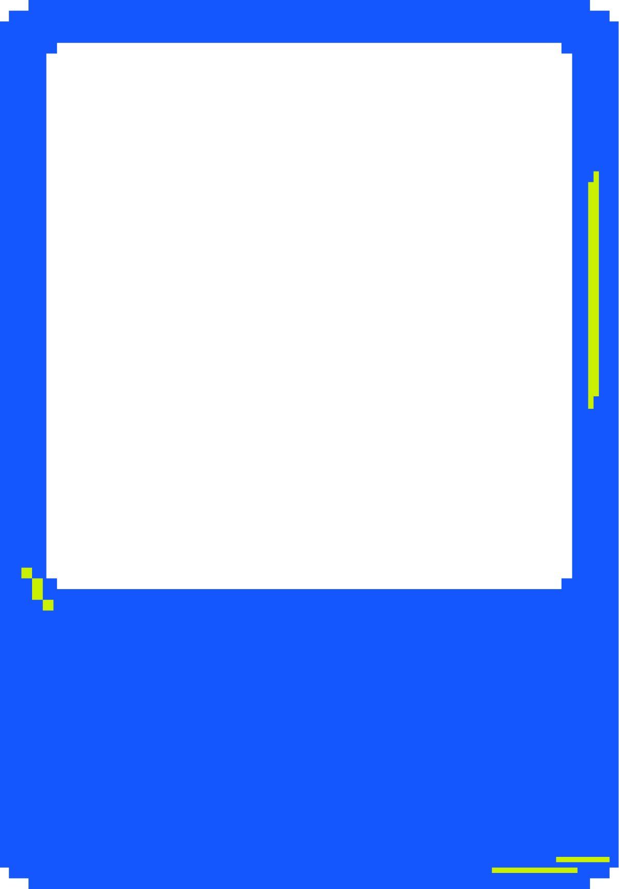
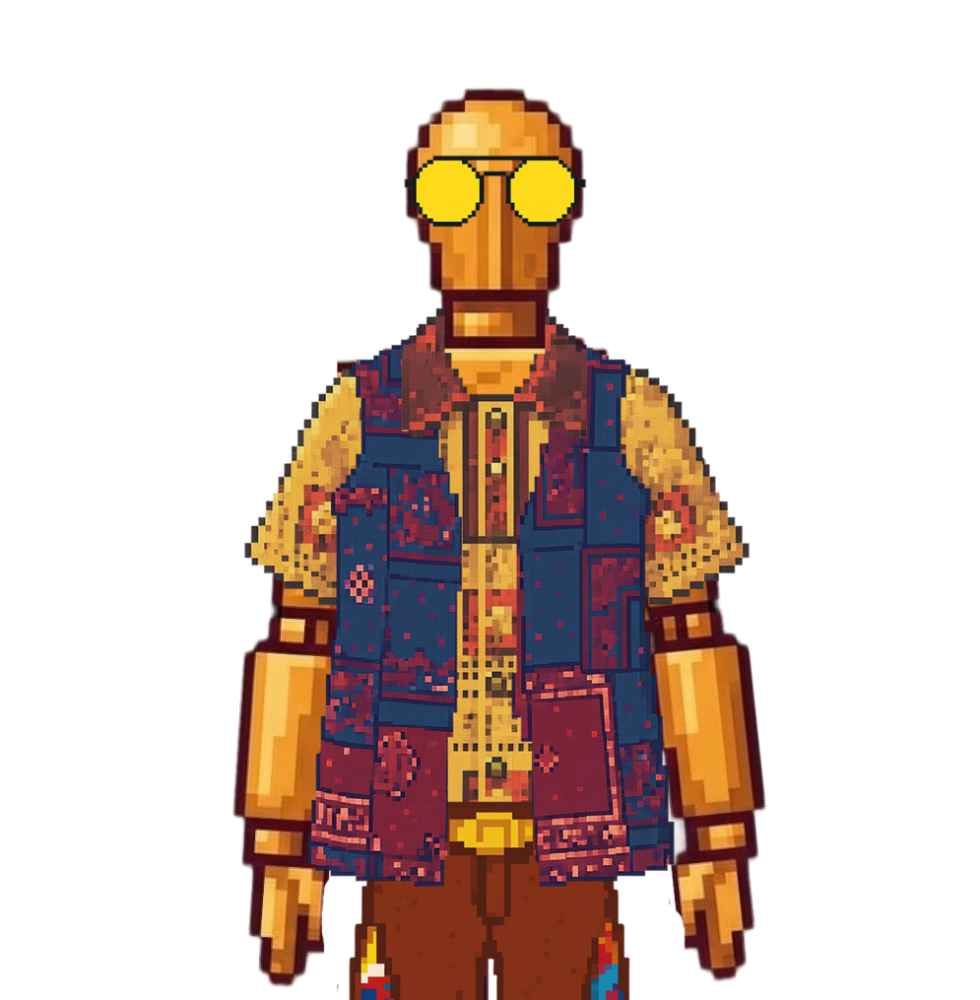
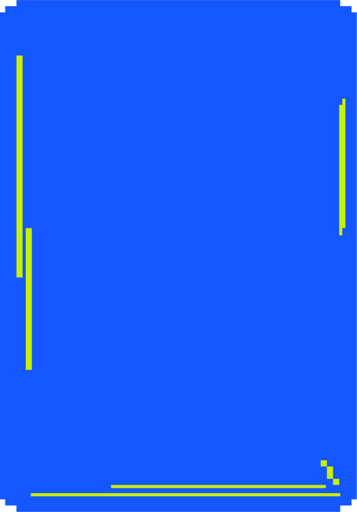

1. Garimpar
Navegue pelas coleções, explore as peças e descubra um novo mundo escondido em cada conjunto.

Garimpar
Na primeira fase, você navegará por três coleções: ARRETADO, FAVELEIRAS e RAÍZES VIVAS, cada uma contando uma história. O que acha de encontrar aquela que conta um pouco sobre suas origens? Clique nas coleções e começe a explorar!